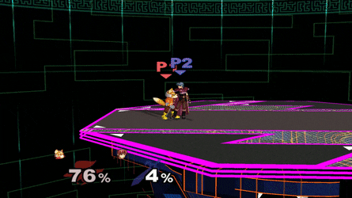

Smash is different from most conventional fighting games in three major ways.
The percent system is a creative, new take on the fighting game genre. Normally in a more traditional fighting game, such as street fighter, players taking damage will drain their health, until one player loses all of his health. However, in smash the opposite is true. The more a player gets hit, the more percentage they rack up. The higher their percentage the farther they get launched when hit. The goal of the game is to hit the other person out of the screen, or into the "blast zone". This can be upwards, sideways,downwards, or any direction in between. When offstage the player attempts to "recover" by using double jumps, and various other moves dependant on character. Once a player loses all their stocks (or lives), they lose. Percent also affects the combo game, because of how a character has different knockback the higher percent they are.(A characters percent can exceed 100%. Max percent is 999%).
Another huge difference between smash, and more conventional fighting games, are the platforms. Because of the difference in goals, and methods of winning, the movement options changed as well. a double jump was added. Jumping plays a huge role in smash, therefore plaforms were added to enhance the combat experience by extending combos, and allowing for more ways to manuveur around an opponent.
The last thing that seperates smash from other conventional fighting games, is the way combos work in this game. In most fighting games if a player is hit with a move, the follow-up is almost always going to be the same. This is because once certain moves hit, certain other moves are guaranteed, and create an inescapable string of moves. This is called a true combo.  In smash there are no such things. This is mainly due to two things. The percent system, and the Directional influence system(DI for short). DI is a system that allows players to influence the trajectory they are launched at after a hit. This means that while getting the comboed, a player still has some control over where their character goes. This means that combo’s vary depending on the actions of the player getting comboed, and that the person comboing still has to react, and work for the combo, instead of pressing a pre-determined combination of buttons.